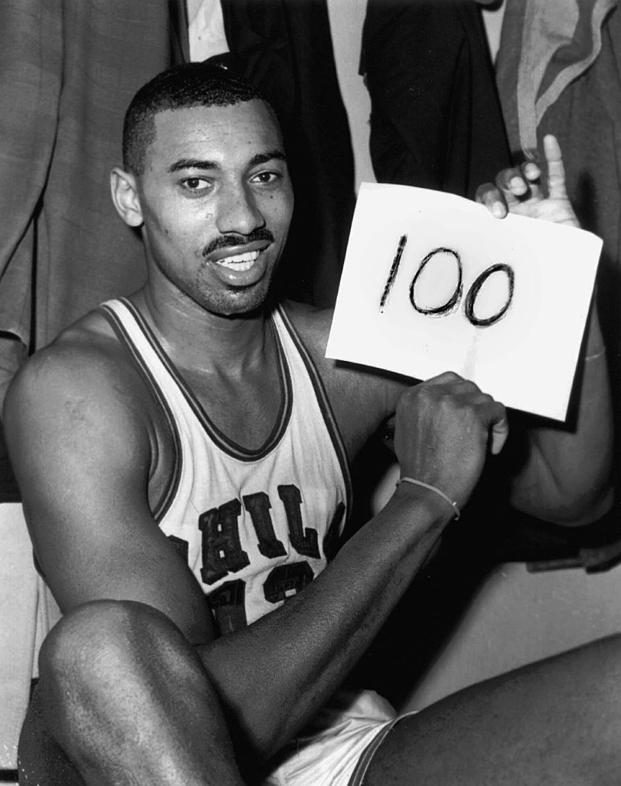

Larry Bird
Posição: ala
Equipe: Boston Celtics (79-92)
Títulos: 3x (81, 84 e 86)
MVP: 3x (84, 85 e 86)
All-Star: 12x (80-88 e 90-92)
Apelido: The Hick from French Lick
Integrante do “Dream Team” dos Estados Unidos, Larry Bird foi um exímio pontuador e um
dos ídolos mais aclamados da história do Boston Celtics. Com a equipe de Massachusetts, venceu três
títulos da NBA e foi eleito MVP três vezes seguidas. Ele tem quatro temporadas com mais de 2.000
pontos na carreira, sendo sua melhor marca na temporada em 1984/85 com 2.295 pontos anotados na
temporada regular e mais 520 nos playoffs. Porém, a sua melhor temporada em pontos não coincidiu com
as temporadas em que venceu a NBA.
Ao todo, Larry Legend acumula 897 partidas na maior liga de basquete do mundo. São quase 22 mil
pontos, 8.974 rebotes e 5.695 assistências na NBA. Seu melhor jogo em número de pontos foi em 12 de
março de 1985, frente ao Atlanta Hawks, quando anotou 60 pontos. Em rebote, seu recorde é de 21 em
uma só partida, repetindo o mesmo número em quatro oportunidades. Por fim, seu dia mais assistente
foi em 16 de fevereiro de 1984, quando deu 17 assistências frente no Golden State Warriors.
Pontos: 21,791 (24.3 p/j)
Rebotes: 8,974 (10.0 r/j)
Assistências: 5,695 (6.3 a/j)
Top 10 momentos de Larry nos celtics
assista ao video.

Kareem Abdul-Jabbar
Posição: pivô
Equipes: Mikwaukee Bucks (69-75) e Los Angeles Lakers (75-89)
Títulos:6x (71, 80, 82, 85, 87 e 88)
MVP: 6x (71, 72, 74, 76, 77 e 80)
All-Star: 19x (70-77 e 79-89)
Apelido: Cap
Estreou na temporada 1969-1970, no Milwaukee Bucks, e encerrou a carreira em 23 de Abril de 1989
nos Los Angeles Lakers. Nesse período, bateu uma série de recordes. Uma das marcas registradas
de Kareem eram os óculos de acrílico que usava na quadra.
Foi seis vezes campeão da NBA e seis vezes vencedor do prêmio ao melhor jogador (MVP). Entre
1969 e 1975, jogou no Milwaukee Bucks, passando depois para o Los Angeles Lakers. Desenvolveu um
lançamento à cesta cujo bloqueio é praticamente impossível, o chamado sky hook (“gancho do
céu”).
Maior número de pontos da história da NBA,com 38387 pontos. O único na história que parece
superá-lo é o brasileiro Oscar Schmidt,que marcou 49703 pontos.
Com 3189 tocos, Abdul-Jabber é o terceiro maior bloqueador da NBA, superado apenas por Hakeem
Olajuwon e Dikembe Mutombo.
2º jogador com maior número de partidas na NBA, com 1560 apresentações.
Veja um pouco sobre o maior cestinha da historia da nba!
acesse aqui.

John Stockton
Posição:armador
Equipe: Utah Jazz (84-03)
All-Star:10x (89-97 e 00)
John Stockton era um armador masterclass. Mestre nas assistências! Junto de Karl Malone,
transformou o Utah Jazz em um time temido nos anos 80 e 90. Embora tenha conquistado nenhum
título, levou a franquia a duas finais de NBA.
Stockton acumula dois recordes considerados muito difíceis de bater. O jogador é o líder
histórico da NBA em assistências e roubadas de bola. Além disso, o armador é também o número 47
no ranking de maiores pontuadores, foi líder de assistências em sete temporadas seguidas e detém
o recorde de assistências em uma única partida em playoffs com 24 contra os Los Angeles Lakers
(na temporada regular chegou a fazer 28).
Estatísticas temporada regular:
Pontos:19.711 (13,1 p/j)
Assistências: 15.806 (10,5 p/j)
Roubadas: 3.365 (2,2 p/j)
assista ao resumo da carreira de john
acessando aqui.

Bill Russel
Posição: pivô
Equipe: Boston Celtics (56-69)
Títulos: 11x (57, 59, 60, 61, 62, 63, 64, 65, 66, 68 e 69)
MVP: 5x (58, 61, 62, 63 e 65)
All-Star: 12x (58-69)
Russell é considerado o melhor defensor da história da NBA. Suas qualidades contra e na defesa
individual são os principais motivos do sucesso do Celtics. Russell também é conhecido por suas
habilidades de recuperação . Ele é o melhor rebote da NBA em quatro ocasiões e capturou um total
de 21.620 rebotes em sua carreira. Junto com Wilt Chamberlain, ele é um dos únicos dois
jogadores da NBA que conseguiu mais de cinquenta rebotes em um único jogo. Embora nunca tenha
sido o líder do ataque do Celtics, Russell tem 14.522 pontos em sua carreira.
Aos 22 anos, fez a sua estreia na liga da NBA tornando-se logo nessa temporada (56/57) campeão.
Na época seguinte, os Boston Celtics ficaram-se pelo segundo posto, mas em 1958/59 iniciaram uma
série de oito triunfos consecutivos na Liga da NBA, que só terminou no final da temporada
1965/66. Russell tornou-se então jogador-treinador dos Boston Celtics e venceu ainda os
campeonatos de 67/68 e 68/69 antes de se retirar em 1969. Até então tinha marcado mais de 14 000
pontos e também sido eleito o jogador mais valioso da NBA nas temporadas 57/58, 60/61, 61/62,
62/63 e 64/65.
biografia de bill:
aqui.

Wilt Chamberlain
Posição: pivô
Equipes: Philadelphia/San Francisco Warriors (59-65), Philadelphia 76ers
(65-68) e Los Angeles Lakers (68-73)
Títulos: 2x (67 e 72)
MVP: 4x (60, 66, 67 e 68)
All-Star: 13x (60-69 e 71-73)
Apelido: Wilt the Stilt
Wilt Chamberlain é um dos maiores jogadores que a NBA já viu. O pivô atuou por 14 anos na liga,
tendo sido 13 vezes All-Star, duas vezes campeão e quatro vezes MVP.
Wilt Chamberlain é um dos maiores jogadores que a NBA já viu. O pivô atuou por 14 anos na liga,
tendo sido 13 vezes All-Star, duas vezes campeão e quatro vezes MVP.
Ele defendeu Philadelphia Warriors, Los Angeles Lakers e Philadelphia 76ers. Em todas as
franquias, Wilt teve grandes atuações. Ao longo de toda sua carreira, o pivô estabeleceu marcas
difíceis de bater.
Sete recordes de Wilt Chamberlain que são impossíveis de serem quebrados:
1) 100 pontos num jogo
2) Maior Reboteiro da História
3) Média de mais de 50 pontos por jogo numa temporada
4) Onze temporadas como maior reboteiro
5) Calouro com média de mais de 30 pontos e mais de 20 rebotes numa
temporada
6) Duplo-Triplo-Duplo: mais de duas dezenas em três fundamentos
7) Quádruplos-Duplos-Duplos: mais de 40 pontos e 40 rebotes num jogo.
A história de wilt:
veja aqui.

Charles Barkley
Posição: ala-pivô
Equipes: Philadelphia 76ers (84-92), Phoenix Suns (92-96) e Houston
Rockets (96-00)
MVP:1x (93)
All-Star: 11x (87-97)
Apelido: Sir Charles
Em 1993, ele foi eleito o MVP da NBA e durante o 50º aniversário da NBA, foi eleito um dos 50
Maiores Jogadores na história da NBA. Ele competiu nos Jogos Olímpicos de 1992 e 1996 e ganhou
duas medalhas de ouro como membro do "Dream Team" dos Estados Unidos. Barkley é duas vezes
eleito para o Basketball Hall of Fame, sendo nomeado em 2006 por sua carreira individual e em
2010 como um membro do "Dream Team".
Desde que se aposentou como jogador, ele teve uma carreira de sucesso como analista da NBA. Ele
trabalha na Turner Network Television (TNT) ao lado de Shaquille O'Neal, Kenny Smith e Ernie
Johnson.
Charles não ganhou nenhum título da NBA, mas em 1993 foi eleito mvp da temporada regular,
enquanto jogava pelo Phoenix Suns.
Veja o quão monstro o cara era:
clique aqui.

Shaquille O'Neal
Posição: pivô
Equipes: Orlando Magic (92-96), Los Angeles Lakers (96-04), Miami Heat
(04-08), Phoenix Suns (08-09), Cleveland Cavaliers (09-10) e Boston Celtics (10-11)
Títulos: 4x (00, 01, 02 e 06)
MVP: 1x (00)
MVP: 1x (00)
MVP: 1x (00)
All-Star: 15x (93-98, 00-07 e 09)
Apelido: Shaq
O'Neal é considerado um dos melhores pivôs e jogadores da história. Ele é famoso por suas
pegadinhas na quadra e por quebrar repetidamente as tabelas de basquete devido ao seu peso e
força.
Suas principais realizações incluem quatro títulos da NBA (2000, 2001, 2002 e 2006), o prêmio de
Jogador Mais Valioso da temporada (2000), três prêmios de Jogador Mais Valioso das Finais da NBA
(2000, 2001 e 2002) e uma medalha de ouro olímpica (1996).
Além dos quatro títulos da NBA, ele foi escolhido em três oportunidades o Jogador Mais Valioso
(MVP) das Finais, uma vez MVP da temporada regular e 15 aparições no Jogo das Estrelas. O’Neal é
também o quinto maior pontuador da história da liga, com 28.596. É também o 12º maior reboteiro,
com 13.099.
Em seus 19 anos de carreira, Shaq teve grandes conquistas. Ele foi 15 vezes All-Star, quatro
vezes campeão, três vezes MVP das Finais, MVP da temporada regular em 2000... Isso o coloca como
um dos principais nomes de sua posição.
Como shaq sempre quebrava as tabelas, veja
aqui.

Lebron James
Posição: ala
Equipes: Cleveland Cavaliers (03-10 e 14-18), Miami Heat (10-14) e Los
Angeles Lakers (18-atual)
Títulos: 4x (12, 13, 16 e 20)
MVP: 4x (09, 10, 12 e 13)
All-Star: 16x (05-20)
Apelido: King James
LeBron James é um dos melhores jogadores da história do basquete. Nascido em 30 de dezembro de
1984, em Akron, no estado de Ohio, nos Estados Unidos, ele iniciou sua trajetória na NBA em
2003, no Cleveland Cavaliers. Passou também pelo Miami Heat e, atualmente, defende o Los Angeles
Lakers. O astro vindo do high school foi escolhido antes de outras futuras grandes estrelas,
como Carmelo Anthony, Chris Bosh e Dwyane Wade.
Em sua primeira temporada, ele foi escolhido o melhor calouro da liga ao manter médias de 20
pontos, 5,9 assistências e 5,5 rebotes por jogo.
Ainda em atividade, é o terceiro maior pontuador da história da NBA, atrás apenas de Kareem
Abdul-Jabbar e Karl Malone. Em 2020, ele superou Kobe Bryant. Está à frente também de Michael
Jordan.
LeBron James é tetracampeão da NBA. O craque levou os títulos da liga em 2012, 2013, 2016 e
2020. Os dois primeiros foram conquistados pelo Miami Heat, enquanto o terceiro foi pelo
Cleveland Cavaliers. Já o quarto veio com a camisa do Los Angeles Lakers.
Estatísticas de LeBron James na NBA
Minutos por jogo: 38,4
Pontos por jogo: 27,1
Assistências por jogo: 7,4
Rebotes por jogo: 7,4
Tocos por jogo: 0,8
Assita a biografia de King James
aqui.

Michael Jordan
Posição: ala-armador
Equipes: Chicago Bulls (84-93 e 95-98) e Washington Wizards (01-03)
Títulos: 6x (91, 92, 93, 96, 97 e 98)
MVP: 5x (88, 91, 92, 96 e 98)
All-Star: 14x (85-93, 96-98, 02 e 03)
Apelido: Air Jordan
Michael Jordan nasceu em Nova Iorque no dia 17 de fevereiro de 1963. É considerado, de forma
unânime, o maior jogador de basquete da história.
O atleta era um ala-armador de técnica refinada. Tinha força, velocidade, agilidade, ótimo
chute, explosão, boa marcação e capacidade de liderança.
Atuou profissionalmente entre 1984 e 2003, passando por Chicago Bulls – sua principal equipe na
NBA – e Washington Wizards. Venceu seis vezes a competição.
O craque norte-americano também foi eleito MVP da temporada regular em cinco oportunidades,
entre outras premiações individuais de grande calibre.
Anotou 32.292 pontos na carreira (média de 30.1 por jogo)
Coletou 6.672 rebotes na carreira (média de 6.2 por jogo)
Distribuiu 5.633 assistências na carreira (média de 5.3 por jogo)
O cara era pica.
Recordes de Michael Jordan
Jogador que mais vestiu a camisa do Chicago Bulls (930)
Maior cestinha da história do Chicago Bulls (29.277)
Maior reboteiro da história do Chicago Bulls (5.836)
Maior assistente da história do Chicago Bulls (5.012)
Maior roubador de bola da história do Chicago Bulls (2.306)
Mais lances livres convertidos em um único quarto (20)
Mais roubadas de bolas acumuladas em um único quarto (8)
Jogador mais velho a anotar mais de 40 pontos em uma partida
Alguns prêmios de Michael Jordan
5x MVP da NBA (1988, 1991, 1992, 1996 e 1998)
6x MVP das finais da NBA (1991, 1992, 1993, 1996, 1997 e 1998)
14x All-Star (1985-1993, 1996-1998, 2002 e 2003)
3x MVP do All-Star (1988, 1996 e 1998)
10x Time ideal da temporada (1987-1993 e 1996-1998)
1x Calouro do ano (1985)
Quatro historias inacreditaveis de Jordan:
clique aqui.

Kobe Bryant
Posição: ala-armador
Equipes: Los Angeles Lakers (96-16)
Títulos: 5x (00, 01, 02, 09 e 10)
MVP: 1x (08)
All-Star: 18x (98 e 00-16)
Apelido: Black Mamba
Kobe Bryant foi um dos maiores jogadores da história do basquete. Ele nasceu em 23 de agosto de
1978, na Filadélfia. Na NBA, defendeu o Los Angeles Lakers entre 1996 e 2016. Nesse período, foi
pentacampeão da liga.
O armador foi eleito o MVP da NBA na temporada 2008. Em 2009 e 2010, ele recebeu o prêmio de
melhor jogador das finais. Por 18 vezes, Kobe Bryant esteve no All-Star Game da NBA. Ele foi o
MVP do Jogo das Estrelas em 2002, 2007, 2009 e 2011.
Maior cestinha da história do Los Angeles Lakers, com 33.643 pontos, Kobe Bryant é também o
quarto maior pontuador da NBA em todos os tempos — na véspera de sua morte, ele foi ultrapassado
por LeBron James, que atualmente defende a tradicional franquia da Califórnia.
Kobe Bryant foi campeão da NBA por 5 vezes, em 2000, 2001, 2002, 2009 e 2010. Nos anos dos dois
últimos títulos, ele foi eleito o MVP das Finais.
Records e prêmios do Black Mamba:
Quarto maior cestinha da história da NBA, com 33.643 pontos
Maior pontuador da história do Los Angeles Lakers
Pentacampeão da NBA
MVP da NBA em 2008
MVP das Finais da NBA em 2009 e 2010
Cestinha da NBA nas temporadas 2006 e 2007.
Video sobre a mentalidade inábalavel de Kobe:
clique aqui.